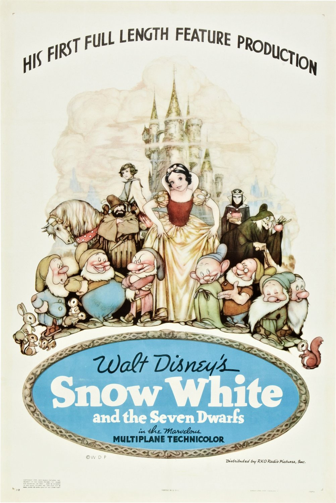

Top $10 Theater
 白雪公主（Snow White and the Seven Dwarfs）—1937 迪士尼1928年推出世界第一部有聲卡通【蒸汽船威利】﹙Steamboat Willie﹚，又於1932年 推出世界第一部彩色卡通【花與樹】﹙Flowers and Trees﹚，之後華特迪士尼有一個更大的夢想， 他想拍一部完全是動畫的電影，世界第一部動畫電影於是誕生！《格林童話》中白雪公主與七個小矮人的故事可以說是家喻戶曉， 華特迪士尼選上這個故事來當他的開天闢地之作！ 許多美國影評還嗤之以鼻認為沒有人會願意花錢看一部都是卡通的電影，幸好本片上映獲得空前成功， 在好萊塢 Cathay Circle 戲院演出時獲得名人觀眾﹙包括卓別林、卡萊葛倫、雪莉坦普…等﹚起立鼓掌， 片中歌曲“Some Day My Prince Will Come”、“Heigh-Ho”…等等也都風靡一時，成為人們琅琅上口的旋律。 《白雪公主》成功開啟動畫史新頁，從此卡通不再只是卡通，而成為動畫！《白雪公主》從此改寫了影史， 它不但是世界上第一部動畫電影，其原聲帶更是世界上第一張電影原聲帶！迪士尼的動畫王國從此奠下龍頭地位！ 本片在1998年被美國電影協會選為本世紀美國百部經典名片之一！ 通貨膨脹計算器（1937-2015，單位：美元）：